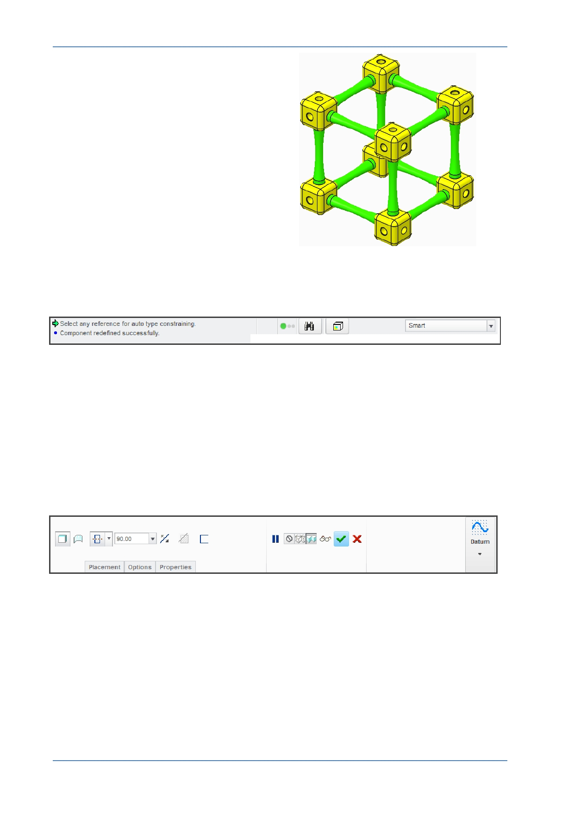

PTC Academic Program
Graphics Area — The working area of
Creo Parametric in which you view,
create, and modify models such as parts,
assemblies, and drawings.
Message Area — The message area provides you with prompts, feedback, and
messages from Creo Parametric. Messages are logged and can be scrolled or the
message window dragged to display more lines.
Dashboard — Locked at the top of the graphics area, the Dashboard appears when
you create or edit a feature.
– The Dashboard provides you with controls, inputs, status, and guidance for
carrying out a task, such as creating or editing a feature. Changes are
immediately visible in the graphics area.
– Tabs along the bottom of the Dashboard provide additional feature options.
– Dashboard icons on the left include feature controls while the Pause, Preview,
Complete Feature or Component and Cancel Feature options are grouped right
of the center.
© 2012 PTC
Creo Parametric 2.0 Primer
Page 7